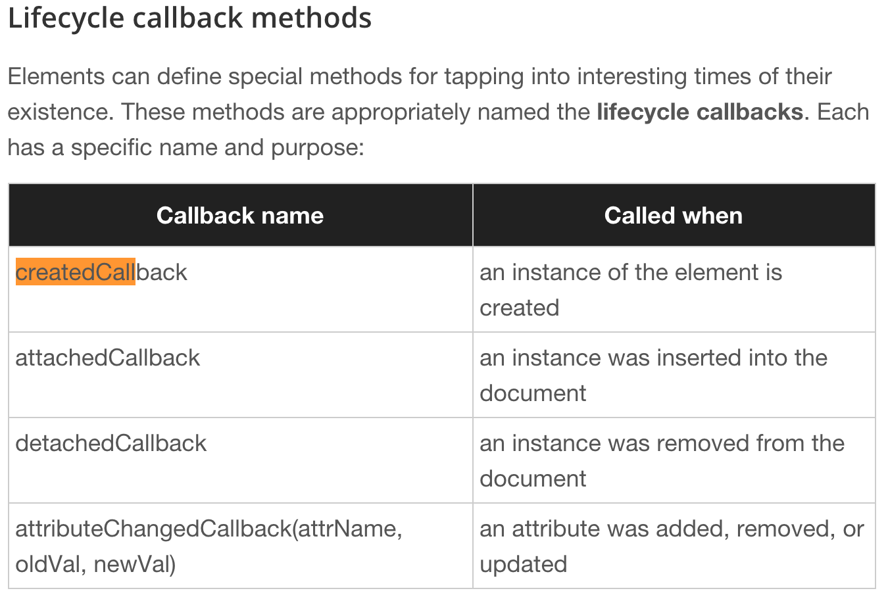
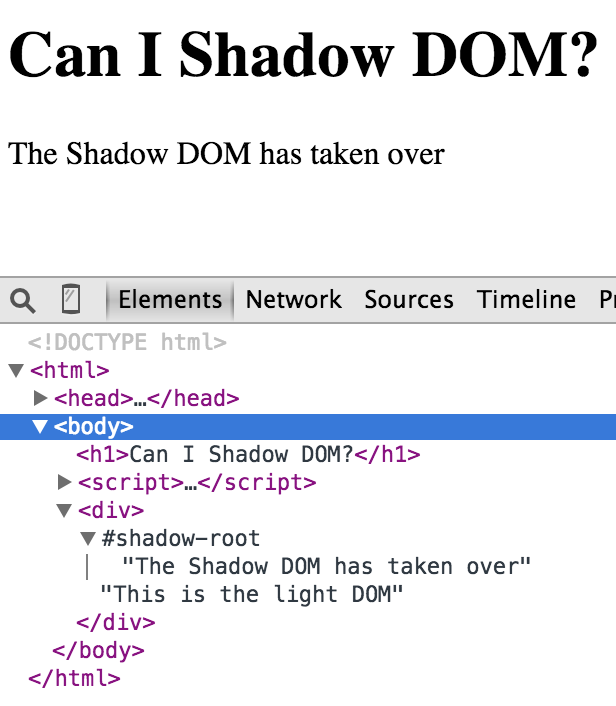
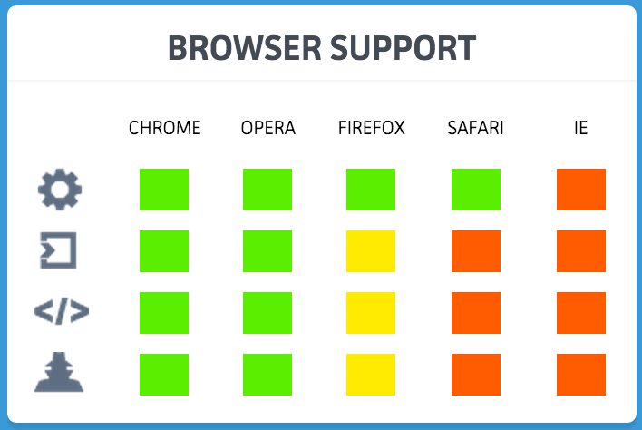
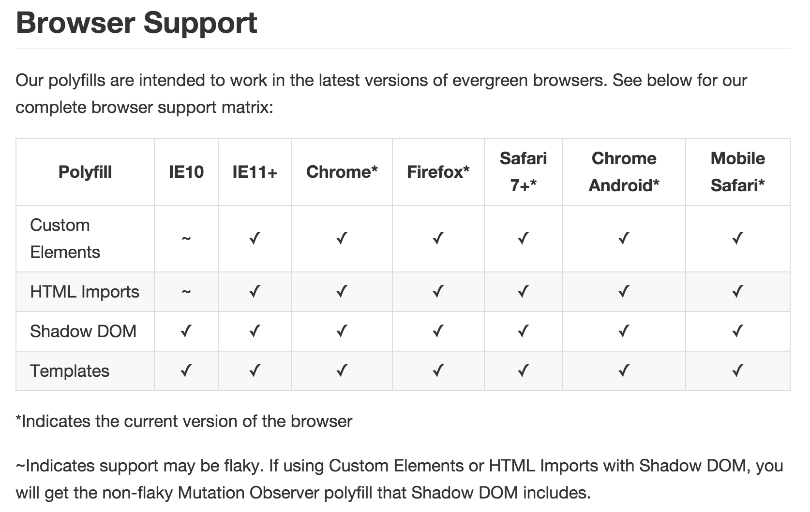

Web Components
is the future...
Surender Katikaneni
what are web components ?
a little history before diving in...
Web 1.0
- Simple documents
- Homepages
- Animated GIFs!
- View source
- Java Applets
Web 1.5
- Passable CSS: Underlined text!, Link colors!, Border types!
- Passable JavaScript: Drop down menus!, Pop ups!, animations
Web 2.0
- DHTML
- XMLHttpRequest → AJAX
- JSON, JSONP
- APIs
- Mash ups, Rich UIs
- Widgets!
- Date pickers! Color pickers!
- JS frameworks and libraries: Prototype, jQuery, Dojo, yUI
Tons of jQuery plug-ins!
MASSIVE ecosystem, Awesome!
- easy to add features to a project
- there's a plug-in for everything
- "designers can code"
- code reuse
- many different vendors
- but...
Maintenance pain
- Side effects
- globals / css bleeding all over the page
- bloated code
- various coding "standards" (or lack of them)
- incompatible plugins (often need to more than one library)
- performance isssues: life cycle not in sync with page render
Also, cumbersome code
<div class="dropdown">
<button type="button" data-toggle="dropdown"
aria-haspopup="true" aria-expanded="false">
Dropdown trigger
<span class="caret"></span>
</button>
<ul class="dropdown-menu" role="menu"
aria-labelledby="dLabel">
...
</ul>
</div>
var componentWrapper
= document.createElement('div');
var innerContent
= document.createElement('div');
componentWrapper.appendChild(innerContent);
// ...
return componentWrapper;
// ...
calendarEl.appendChild(componentWrapper);
$("#datepicker")
.datepicker($.datepicker.regional["fr"]);
$("#locale").change(function() {
$("#datepicker").datepicker("option",
$.datepicker.regional[ $(this).val() ] );
});
How can Web Components help?
by making it easier to build modular, more encapsulated code
A simple example:
<x-calendar></x-calendar>
// create a new element
var calendar =
document.createElement('x-calendar');
// find existing element
var calendar =
document.querySelector('x-calendar');
//access custom methods
calendar.nextMonth();
calendar.setLocale('fr');
Each instance of these new elements...
- is a DOM element
- Deals with building its DOM tree
- Behaves like any other DOM element
- Lives in the DOM tree with other elements
- Can be accessed and manipulated with DOM methods or jQuery like libraries...
- Is also a JavaScript object
- ... so it can have custom methods to interact with the component!
Web Components...
are a collection of standards which enable truly encapsulated and reusable components for the web
and is comprised of four parts:
- Custom elements
- HTML templates
- Shadow DOM
- HTML imports
1. Custom elements
Define new HTML/DOM elements
Create elements that extend from other elements
Logically bundle together custom functionality into a single tag
var XFooProto = Object.create(HTMLElement.prototype);
XFooProto.createdCallback = function() {
this.innerHTML = "I'm an x-foo-with-markup!";
};
document.register('x-foo', XFooProto);
Registering...
var proto = Object.create(HTMLElement.prototype);
proto.createdCallback = function() {
this.addEventListener('click', function(e) {
console.log('Foo!');
});
};
proto.attachedCallback = function() {...};
var XFoo = document.registerElement('x-foo', {prototype: proto});
Instantiating ...
Markup...
<x-foo></x-foo>JavaScript...
var xFoo = new XFoo();
document.body.appendChild(xFoo);
Lify cycle methods
2. HTML Templates
"Inert HTML chunks"
not live until you say so
<template id="row-template">
<tr>
<td><input .../></td>
<td><button .../></td>
</tr>
</template>
3. Shadow DOM
Or: you can see, but not touch this!
var shadow = node.createShadowRoot();
shadow.appendChild(otherNodes);
Shadow DOM in context
Shadow DOM:
Tricky yet powerful
- Creates a boundary around your element
- Superuseful for things such as players, calendars
- It is still in the same doc context (not an iframe)
- Nice tutorial
4. HTML imports
Include HTML documents in other HTML documents
or: "require() for the web"
// Importing Custom Elements
link(rel='import', href='./x-foo.html')
Browser Compatablity - Native support
Not supported on every browser
but... polyfills!
Browser Compatablity - with pollyfills
webcomponents.js
- polyfills custom elements, HTML imports, Shadow DOM
- also WeakMap and Mutation Observers
Also webcomponents-lite.js
- polyfill custom elements and HTML imports only
Custom Elements are pretty safe to use right now!
A note of warning
Polyfills are NOT FREE
- They come at a cost (bandwidth, processing)
- Especially Shadow DOM polyfill!
What are Polymer X-Tag, skateJS?
Syntactic sugar for vanilla web components
- Built on top of the Web Components pillars
- ... or on the polyfills
- Not shipped with the browser!
X-Tag example
xtag.register('web-bell', {
extends: 'div',
lifecycle: {
created: function() {
this.innerHTML = 'BELL';
}
}
});
Declarative polymer example
<polymer-element name="web-bell" extends="div">
<template>
BELL
</template>
<script>
Polymer();
</script>
</polymer-element>
Imperative Polymer example
Polymer('web-bell', {
extends: 'div',
created: function() {
this.innerHTML = 'BELL';
}
});